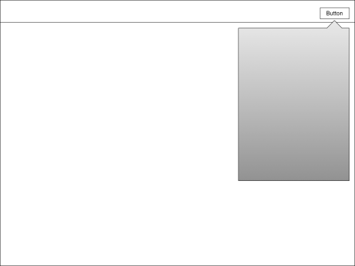
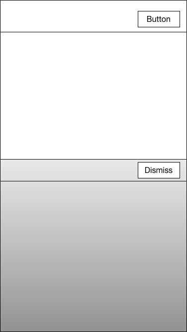

Custom Presentation Controllers and Adaptability
Last year, with iOS 8, Apple gave us the ability to customize view controller presentations. Not only can you create a custom transition for a presentation, you can now add behavior to deal with adaptability. Recently I hit a wall with using a custom UIPresentationController.
The Setup
I have a view controller that I’d like to present as a normal popover while in a regular width environment. This is easy enough. Just set the .modalPresentationStyle = .Popover and the .popoverPresentationController.barButtonItem = sender and done. You’ll end up with something like this:

Luckily the UIPopoverPresentationController knows how to adapt when the presentation enters a compact width environment. You’d get something like so:
Unfortunately, I don’t want the stock full screen presentation as my adapted layout. I’d rather something more like this. (We call it half-height internally, even though it’s not truly half-height.)

The Problem
After fiddling with this for quite a while, I’ve come to believe that there’s no real way to do this. We have a custom presentation controller that gets us into the ‘half-height’ mode, but there’s no way to switch from the system defined UIPopoverPresentationController to our custom presentation controller. More generally, you can’t switch out the presentation controller during a presentation.
Because of this, if — during a single presentation — you ever want a custom adapted style, you need your custom presentation controller in place from the start. Unfortunately this also seems to mean you can’t fall back on the system defined presentations.
False Hope
To use a custom presentation controller you need to assign a custom object that conforms to UIViewControllerTransitioningDelegate. This object will vend a presentationControllerForPresentedViewController:… when asked. My first attempt at fixing this was to check the sourceViewController.traitCollection.horizontalSizeClass and if .Regular return a UIPopoverPresentationController and if .Compact return my custom presentation controller. Bad news here is that you’re only asked for a presentation controller once per presentation, even if the trait collection changes.
Then I noticed that UIPresentationController defines the -adaptivePresentationStyleForTraitCollection: method. My hope was that if I returned .Popover from this method while in a regular width trait environment, the system would magically use a popover presentation. This was not the case — which makes sense — but I was grasping at straws at this point. This method is really just a trampoline to the popover controller’s delegate, if it has one.
Proposed Solution
Right now the presentation controller and the actual layout on screen are too tightly coupled and the current API doesn’t allow for reuse of the system presentation controllers layouts. First off, the current API for a custom presentation controller really only allows me to vend -frameOfPresentedViewInContainerView. Yes, I can also wrap up the presented view controller into a another view, but my only real customization point for layout is the frame I return. If I want do a system popover in regular width and my custom layout in compact width, I’d have to completely implement a layout and look that mimicked the system popover while in regular width.
Instead, I think it would be nice if the presentation were composable. Perhaps UIPresentationController could vend something like a UIPresentationLayout. This way, instead of the controller being directly responsible from vending a frame, it could defer that logic to a layout object. Then UIKit could define things like UIPopoverPresentationLayout or UIFormSheetPresentationLayout. If the API were more like this, I could simply return a UIPopoverPresentationLayout when in regular width and custom subclass when in compact width.
Conclusion
As much as I’d like to fully support adaptability, I think right now we’re going to have to resort to dismissing the presentation on size class change. This isn’t great for the user but until custom presentations and adaptability stop fighting, I think it’s our only option.
Filed as rdar:///22136607 (API request for composable presentations.)